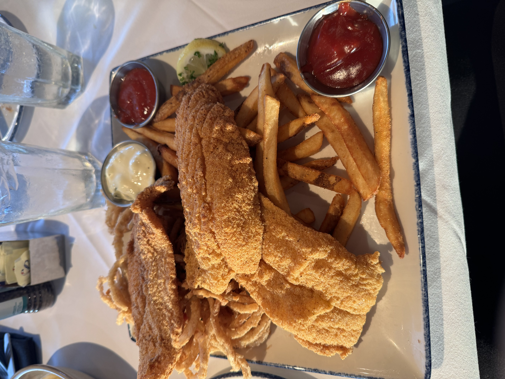

Hello World!
Hello! I just revamped the website so we’re starting from scratch unfortunately haha. Also, don’t bother clicking on any of the links in the header (they don’t work hehe). I’m not too sure what the goal is, but I think I’ll try to blog everyday so that I can remember what I’ve done and accomplished in my final year of undergrad ;-;. I think this will be some kind of way to “immortalize” my memories.
I think the format for these blogs will be pretty informal as I don’t think anyone will ever read these haha. I just enjoy mind-dumping. I’ll be yappin…as they call it. Anyways…to add to the word count of the first blog I think I’ll start with a quick summer recap!
I think this summer was actually pretty fun and productive. First thing I did was visit family back in Texas (I’m currently living in Washignton for context). If you ignored the heat, I’d say it was an 8/10 in terms of pleasantness. I got to hang out with the sister, spend time with the grandma, and play the tennis. Speaking of tennis, my dad has gotten too good…I think he’s been playing with the old people at the racquet club near our house. I must keep defeating him. As far as everything non-family related, the food portions were huge as always.

Also, Whataburger exists in the South. Lord…I love Whataburger. Along with the full belly you get, your wallet really never takes a hit. Everything I ate was under $14 (Washington, you need to do better).
Two weeks later I finally returned to Seattle and started up research with the Information Processing Lab at UW. The project I’m currently working on focuses on detecting, segmenting, and evaluating fish from videos captured on fishery boats. My tasks included training the models (YOLOv8) used for segmentation, writing scripts for data organization and model evaluation metrics, and implementing a midline estimation algorithm to estimate fish lengths. Now let me tell you, this midline estimation thing was a pain in the a** for me. Hopefully none of the people I’m working with will ever see this (I apologize Professor Hwang). However, in my own words, it was a super learning experience. Initially I was doing Principal Component Analysis (PCA) across the entire body of the fish. However, this only really worked when the fish was “flattened” out. For the fish that were bent in weird angles, the PCA created midines that zigzagged all over the place. After about a week and a half and many failed attempts, I finally got to a solution. I just had to perform PCA two times. Perform PCA once in the head region and once in the tail region of the fish. Here’s a picture of the improvement:

Anyways I went to Philadelphia late into July, and solo-traveled for a couple of days before meeting up with my mom. Here’s some highlights from the trip:


After the trip I settled down in Seattle and continued to work on all of my tasks from the lab. From time to time I would hang out with friends to go out and eat, hike, workout, and watch movies. I finished all of Game of Thrones in 3 weeks. Wait, I think this was actually a low for me. Season 8 man. THE KING IN THE NORTH. But I remember staying up till 5 AM watching this show and waking up at 2 PM. All of this was pretty basic but I thought it was a perfect balance between socializing and laziness. I think I’ve gotten too content with this lifestyle. I fear school is going to crush me.
As for anything recent, I just moved into my new apartment unit (It’s the same building, just different room). Peep the crib tho:

The last tenant left the lamp, so I got to keep it. Also, I’ve been cold-emailing a bunch of professors from different schools just for research opportunities (I forgot to mention I’m applying for PhD programs soon so I’ll just plug it in here) and got a response back from a professor from UCSD! On Thursday I’ll be meeting him over Zoom. I’m hoping all things will go well. Kinda anxious. Anyways, thanks for reading all of this yap you invisible audience. It feels like talking to a wall, but I’ve forgotten how much I enjoyed doing this lul. This is definitely one of the longer blogs, but I hope I’ll be as consistent as possible. More updates soon to come. Buh-bye.